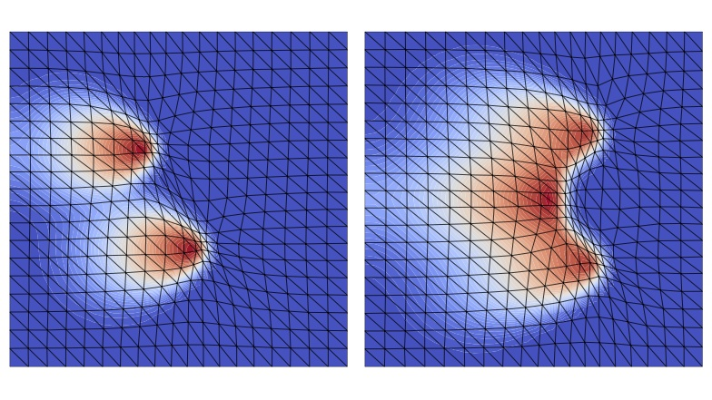
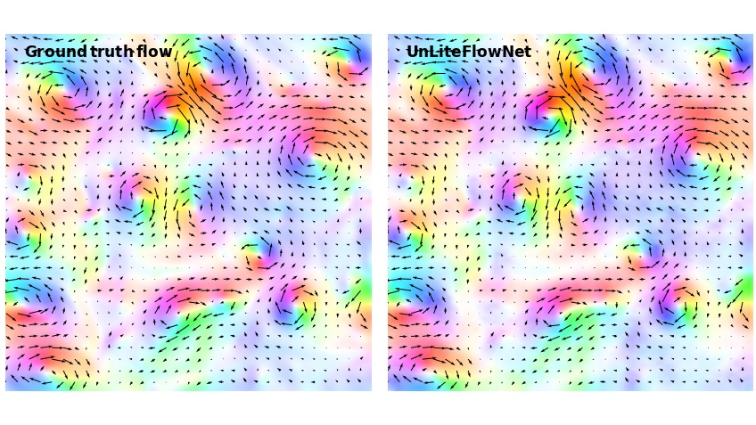

End-to-end wind turbine wake modelling with deep graph representation learning
Siyi Li, Mingrui Zhang, Matthew Piggott
Applied Energy, 2023 [Paper]
Learning to Estimate and Refine Fluid Motion with Physical Dynamics
Mingrui Zhang, Jianhong Wang, James Tlhomole, Matthew D Piggott
International Conference on Machine Learning (ICML), 2022 [Paper]

M2N: Mesh movement networks for PDE solvers
Wenbin Song*, Mingrui Zhang*, Joseph G Wallwork, Junpeng Gao, Zheng Tian, Fanglei Sun, Matthew D Piggott, Junqing Chen, Zuoqiang Shi, Xiang Chen, Jun Wang (*Equal contribution)
Advances in Neural Information Processing Systems (NeurIPS), 2022 [Paper]

E2N: error estimation networks for goal-oriented mesh adaptation
Joseph G Wallwork, Jingyi Lu, Mingrui Zhang, Matthew D Piggott
arXiv preprint, 2022 [Paper]
Complex locomotion skill learning via differentiable physics